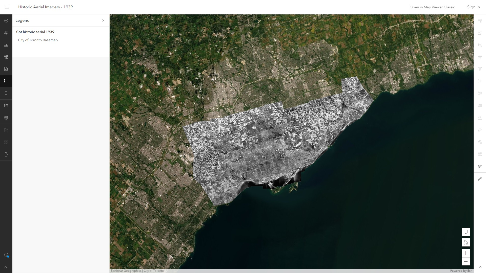

Overview
To alleviate the difficulties when researching development activities in Toronto, a series of web solutions were created to meet the project objectives. Here is an overview of the main deliverables of this project:
The following supplemental deliverables are not listed as the main deliverables of the project but were created to support the main deliverables.
Web Maps
The main map lists all currently active and inactive Community Planning applications, Committee of Adjustment applications and Toronto Local Appeal Body appeals received by the City between January 1st 2008 till present. It can be viewed through ArcGIS Map Viewer.
The heat map visualizes the magnitude of development activities in different locations, helping the users to understand the patterns and identify the hot spots of the development activities in Toronto. Similar to the main map, the heat map can be viewed through ArcGIS Map Viewer.
Dashboard
The operational dashboard integrates the web maps and all relevant information on a single screen, presenting dynamic results in an easy-to-read format and allowing the users to explore the data interactively.
Web Application
The web application displays the web maps and information using customized widgets and templates, where the responsive design allows the web application to run seamlessly on desktop and mobile devices.
Story Map
The story map provides information about the development activities in Toronto, in addition to the web maps. Through the story map, the users can learn more about the development history of Toronto and the current development application types that are available.
Python Scripts
The setup script utilizes ArcGIS API for Python to publish hosted feature layers and set up web maps for this project easily. The client can run the setup script through ArcGIS Notebooks.

The maintenance script utilizes ArcGIS API for Python to update the hosted feature layers of the Development Activity Tracker on a daily basis. The client can host the maintenance script through ArcGIS Notebooks to utilize the scheduled task functionality.
Supplemental Deliverables
The hosted feature layer of the development applications dataset was published from the source CSV file. The hosted feature layer of the regional municipal boundary was published from the source shapefile. Both hosted feature layers were added to the web maps.
Development Applications » Regional Municipal Boundary »
The historic aerial imagery map was used in the story map only for educational purposes. It was applied to the swipe block in the story map, allowing the users to compare with the current aerial imagery interactively.
The feedback survey was powered by ArcGIS Survey 123 and was linked from the dashboard and the web application, allowing the users to provide feedbacks such as problematic data. All submissions will be stored in the client’s account for review, and the client can use the received feedbacks for future enhancements.
Finally, the step-by-step Python setup guide was created to assist the client to set up the web maps and the automated updates. The setup guide includes detailed instructions with screenshots in plain language, thus the staffs who did not use ArcGIS Notebooks before can follow the instructions and set up the scripts easily.
Final Report
The final report was created after the project implementation to document the methodology, and the results in detail.